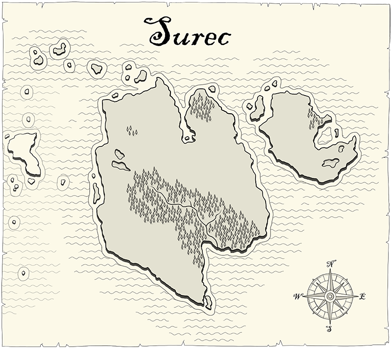

The World of Nagarion
A drawn worldmap of Nagarion - Copyright Raymon Manders
The world of Nagarion isn't too vast, but still there's lots to
explore and discover. The world is divided in a number of landmasses,
or continents.
-
Unroc
- The wild continent
-
Nemok
- The cultural melting pot
-
Surec
- The varied continent
-
Cyproc
- The squabbling tribes
-
Audac
- The cold continent
-
Tuprak
- The mystical continent
Unroc, the land of mountains, forests, and plains. Wide stretches
of nothing, only inhabited by the wildest of Nagarion's wildlife.
A drawn map of the continent of Unroc - Copyright Raymon Manders
Nemok is the "most cultured" part of Nagarion. Vast cities of
every race possible dot the landscape.
A drawn map of the continent of Nemok - Copyright Raymon Manders
Surec has a bit of everything. You can find almost any type of
terrain somewhere on this continent.

A drawn map of the continent of Surec - Copyright Raymon Manders
Plains, deserts, forests, a huge mountain ridge...but mostly
scuffling kingdoms and tribes.
A drawn map of the continent of Cyproc - Copyright Raymon
Manders
This relatively small island is the coldest of them all. Mostly
known for its pirates.
A drawn map of the continent of Audac - Copyright Raymon Manders
Tuprak's nature is mostly untouched. It is wild and mysterious,
but wacht out, as Tuprak is as beautiful as it is dangerous.
A drawn map of the continent of Tuprak - Copyright Raymon
Manders